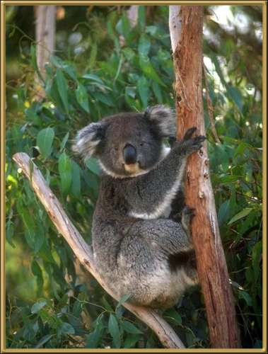

This is perhaps one of Australia's best known animals. But don't be fooled by all the advertising that shows them as cute and cuddly! These animals can grow very large, and can be very dangerous. 50-82cm (20-32 inches). They eat only certain types of eucalypt leaves, which restricts their habitat. They used to often be referred to as Koala Bears, but they have no relationship to bears at all. They are a nocturnal animal and have only one offspring a year.
Photographer: unknown